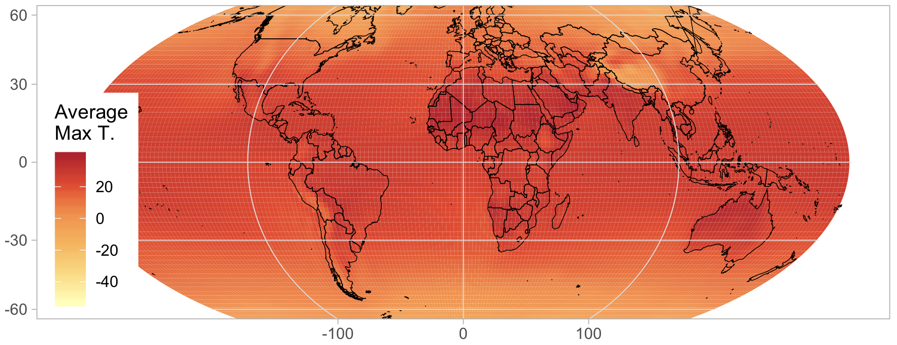

    <main class="jupyter-page">
    <div class="jb_cell">

<div class="cell border-box-sizing text_cell rendered"><div class="inner_cell">
<div class="text_cell_render border-box-sizing rendered_html">
<h1 id="3.-Weighting-schemes">3. Weighting schemes<a class="anchor-link" href="#3.-Weighting-schemes"> </a></h1><p>This section describes how to use different weighting schemes when aggregating gridded data to data regions.</p>
<h2 id="3.1-Why-spatial-weighting-schemes-matter">3.1 Why spatial weighting schemes matter<a class="anchor-link" href="#3.1-Why-spatial-weighting-schemes-matter"> </a></h2><p>Taking the unweighted average of weather within a region can misrepresent what populations, firms, or other phenomena of interest are exposed to. For example, an unweighted annual average temperature for Canada is about -8°C, but most of the population and agricultural activity is in climate zones with mean temperatures over 6°C, and the urban heat island effect can raise temperatures by another 4°C. The time of year matters too, and you should consider a weighting scheme across days within a year, or even hours within a day.</p>
<p>As described in section <a href="reduced-form-specification#Dealing-with-the-spatial-and-temporal-scales-of-economic-processes">Dealing with the spatial and temporal scales of economic processes</a>, the scale of a phenomenon matters. Many processes occur at a more local scale than that which data is collected. The motivation for weighting is different for aggregation that represents averaged phenomena vs. phenomena that respond to averaged weather, and the sequence of analysis changes.</p>
<p>In the first case, the phenomenon occurs locally, in response to local weather. In this case, we perform weighted aggregations to reflect the amount of the phenomenon in each location. For example, we would use population weighting to model the effects of heat on people. In this case, the order of operations is:</p>
<ol>
<li>Transform weather into the terms of the model specification.</li>
<li>Average these transformed terms across space using a weighting scheme.</li>
</ol>
<p>In the second case, the phenomenon occurs at a data region level, in response to averaged weather. In this case, the weighting scheme reflects the relative importance of weather in different regions to the whole. For example, weighting rainfall by the distance from a shore could be important to predict the declaration of states of emergency. The order of operations is:</p>
<ol>
<li>Average the weather across space using a weighting scheme.</li>
<li>Transform the averaged weather to the model specification.</li>
</ol>
<p>In either case, the weighting scheme is the same:</p>
$$T_{it} = \sum_{p \in P(i)} w_p T_{pt} \text{ such that } \sum_p w_{p \in P(i)} = 1 \,\,\,\forall i$$<p>where $w_p$ is the weight for pixel $p$, and $P(i)$ is the set of pixels in data region $i$.</p>
<h2 id="3.2-Kinds-of-weight-schemes-and-data-sources">3.2 Kinds of weight schemes and data sources<a class="anchor-link" href="#3.2-Kinds-of-weight-schemes-and-data-sources"> </a></h2><p>Weighting data files come in a wide range of file formats, since any gridded data file is appropriate. The most common data types are CSV, ASC, GeoTIFF, and BIL files. In each case, you (or your code) need to know (1) the format of the data values, (2) the spatial gridding scheme, (3) the projection, and (4) how missing data is handled.</p>
<ol>
<li>Format of the data values: Data values can be written out in text (as with CSV and ASC files) or in a binary representation (GeoTIFF and BIL). If the values are written as text, delimiters will be used to separate them (comma for CSV, spaces for ASC).</li>
<li>The spatial gridding scheme is determined by 6 numbers: a latitude and longitude of an origin point, a horizontal and vertical cell lengths, and a number of rows and columns.<ul>
<li>The most common origin point is the location of the lower-left corner of the lower-left grid cell. For example, for a global dataset, that might be 90°S, 180°W, which is represented in x, y coordinates as (-180, -90). Sometimes (particularly with NetCDF files), grid cell center locations will be used instead.</li>
<li>Grid cell sizes are often given as decimal representation of fractions of a degree, such as 0.0083333333333 = 1 / 120 of a degree. This is the grid cell size needed globally to ensure a km-scale resolution. Usually the horizontal and vertical grid cell lengths are the same, and reported as a single number.</li>
<li>The number of grid cells is the most common way to describe the spatial coverage of the dataset. A global dataset will have 180 / cellsize rows and 360 / cellsize columns.</li>
</ul>
</li>
</ol>
<p>Based on this information, you can calculate which grid cell any point on the globe falls into:</p>
$$\text{row} = \text{floor}\left(\frac{\text{Latitude} - y_0}{\text{CellSize}}\right),$$<p></p>
$$\text{column} = \text{floor}\left(\frac{\text{Longitude} - x_0}{\text{CellSize}}\right)$$<p>where $x_0, y_0$ is lower-left corner point. If the center of the lower-left cell was given, $x_0 = x_\text{llcenter} - \frac{\text{CellSize}}{2}$, $y_0 = y_\text{llcenter} - \frac{\text{CellSize}}{2}$.</p>
<p>For CSV files, you will need to keep track of this data yourself. ASC files have it at the top of the file, BIL files have a corresponding HDR file with the data, and GeoTIFF files have it embedded in the file which you can read with various software tools.</p>
<ol>
<li>Projections are a way to map points on the globe (in latitude-longitude space) to a point in a flat x, y space. While this is important for visualizing maps, it can just be a nuisance for gridded datasets. The most common “projection” for gridded datasets is an equirectangular projection, and we have been assuming this above. This is variously referred to as <code>1</code>, <code>ll</code>, <code>WGS 84</code>, and <code>EPSG: 4326</code> (techically, WGS 84 species how latitude and longitude are defined, and EPSG:4326 specifies a drawing scheme where x = longitude and y = latitude). However, you will sometimes enounter grids in terms of km north and km east of a point, and then you may need to project these back to latitude-longitude and regrid them.</li>
<li>All of these allow missing data to be handled. Typically, a specific numerical representation, like -9999, will be used. This is specified the same way that the gridding scheme is.</li>
</ol>
<p>Implementation Notes: Reading gridded data.</p>
<table>
<thead><tr>
<th>R</th>
<th>Python</th>
</tr>
</thead>
<tbody>
<tr>
<td>Use the <code>raster</code> library.</td>
<td>Take a look at <a href="https://github.com/jrising/research-common/tree/master/python/geogrid">https://github.com/jrising/research-common/tree/master/python/geogrid</a>.</td>
</tr>
</tbody>
</table>
<p>In some cases, it is appropriate and possible to use time-varying weighting schemes. For example, if population impacts are being studied, and the scale of the model is individuals, annual estimate of population can be used. This kind of data is often either in NetCDF format (see above), or as a collection of files.</p>
<p>Implementation Notes: Downloading multiple files and reading them.</p>
<div class="highlight"><pre><span></span><span class="nf">library</span><span class="p">(</span><span class="n">raster</span><span class="p">)</span>
<span class="nf">for </span><span class="p">(</span><span class="n">year</span> <span class="n">in</span> <span class="m">1980</span><span class="o">:</span><span class="m">2010</span><span class="p">)</span> <span class="p">{</span>
  <span class="nf">download.file</span><span class="p">(</span><span class="nf">paste0</span><span class="p">(</span><span class="s">&quot;http://archive.org/awesome/&quot;</span><span class="p">,</span> <span class="n">year</span><span class="p">,</span> <span class="s">&quot;.zip&quot;</span><span class="p">),</span> <span class="s">&quot;temp.zip&quot;</span><span class="p">)</span>
  <span class="n">filename</span> <span class="o">&lt;-</span> <span class="nf">paste0</span><span class="p">(</span><span class="s">&quot;prefix-&quot;</span><span class="p">,</span> <span class="n">year</span><span class="p">,</span> <span class="s">&quot;.asc&quot;</span><span class="p">)</span>
  <span class="nf">zip.file.extract</span><span class="p">(</span><span class="n">filename</span><span class="p">,</span> <span class="s">&quot;temp.zip&quot;</span><span class="p">)</span>
  <span class="n">r</span> <span class="o">&lt;-</span> <span class="nf">raster</span><span class="p">(</span><span class="n">filename</span><span class="p">)</span>
  <span class="o">&lt;</span><span class="n">perform</span> <span class="n">weighting</span><span class="o">&gt;</span>
<span class="p">}</span>
</pre></div>
<p>Below are some common datasources for various weighting schemes.</p>
<ul>
<li>Population is an important weighting scheme for social impacts.<ul>
<li>Gridded Population of the World: <a href="https://sedac.ciesin.columbia.edu/data/collection/gpw-v4">https://sedac.ciesin.columbia.edu/data/collection/gpw-v4</a>
  This is open-source, available at 30 arc-second resolution every 5 years from 2000 (or before with their previous version).</li>
<li>LandScan: <a href="https://landscan.ornl.gov/landscan-datasets">https://landscan.ornl.gov/landscan-datasets</a>
  LandScan is available at 30 arc-second resolution, annually, but previous years need to be purchased. As at your institution, as many already have it.</li>
</ul>
</li>
<li>Gridded agriculture information<ul>
<li>Global Agricultural Lands in the Year 2000: <a href="https://sedac.ciesin.columbia.edu/data/collection/aglands">https://sedac.ciesin.columbia.edu/data/collection/aglands</a></li>
<li>Also consider gridded land use datasets: <a href="https://www.atmos.illinois.edu/~meiyapp2/datasets.htm">https://www.atmos.illinois.edu/~meiyapp2/datasets.htm</a></li>
</ul>
</li>
<li>Look at the IRI Data Library for a large variety of datasets, available in any format: <a href="https://iridl.ldeo.columbia.edu/">https://iridl.ldeo.columbia.edu/</a></li>
</ul>
<h2 id="3.3-Aligning-weather-and-weighting-grids">3.3 Aligning weather and weighting grids<a class="anchor-link" href="#3.3-Aligning-weather-and-weighting-grids"> </a></h2><p>The first step to using a gridded weighting dataset is to make it
conform to data grid definition used by your weather data.  Here we
assume that both are regular latitude-longitude
grids. See
<a href="#Kinds-of-weight-schemes-and-data-sources">Kinds of weight schemes and data sources</a> to
understand the grid scheme for your weighting file; note that gridded
weather data often reports the center of each grid cell, rather than
the corner.</p>
<p>The following recipe should work for most cases to align weighting data with a weather grid.</p>
<h3 id="Step-1:-Resample-the-weighting-data-until-the-grid-of-the-weighting-data-evenly-divides-up-the-weather-data.">Step 1: <strong>Resample the weighting data until the grid of the weighting data evenly divides up the weather data.</strong><a class="anchor-link" href="#Step-1:-Resample-the-weighting-data-until-the-grid-of-the-weighting-data-evenly-divides-up-the-weather-data."> </a></h3><p>Resampling in this case means increasing the resolution of the weighting grid by some factor. You want to do this so that two conditions to be met after resampling: (A) The new resolution should be an integer multiple of the weather resolution. (B) The horizontal and vertical grid lines of the weather data coincide with the resampled grid lines of the weighting data.</p>
<p>Example: Suppose the weather data is nearly global, from 180°W to 180°E, 90°S to 86°N, as the case with LandScan population data. The resolution is 1/120th of a degree. You want to use this to weight PRISM data for the USA, with an extent 125.0208 to 66.47917°W, 24.0625 to 49.9375°N, with a resolution of 1/24th of a degree.</p>
<div class="highlight"><pre><span></span><span class="n">landscan</span> <span class="o">&lt;-</span> <span class="nf">raster</span><span class="p">(</span><span class="s">&quot;…/w001001.adf&quot;</span><span class="p">)</span>
<span class="n">landscan</span>
<span class="c1">## class       : RasterLayer</span>
<span class="c1">## dimensions  : 21120, 43200, 912384000  (nrow, ncol, ncell)</span>
<span class="c1">## resolution  : 0.008333333, 0.008333333  (x, y)</span>
<span class="c1">## extent      : -180, 180, -90, 86  (xmin, xmax, ymin, ymax)</span>
<span class="n">prism</span> <span class="o">&lt;-</span> <span class="nf">raster</span><span class="p">(</span><span class="s">&quot;PRISM_tmax_stable_4kmM2_2000_all_asc&quot;</span><span class="p">)</span>
<span class="n">prism</span>
<span class="c1">## class       : RasterLayer</span>
<span class="c1">## dimensions  : 621, 1405, 872505  (nrow, ncol, ncell)</span>
<span class="c1">## resolution  : 0.04166667, 0.04166667  (x, y)</span>
<span class="c1">## extent      : -125.0208, -66.47917, 24.0625, 49.9375  (xmin, xmax, ymin, ymax)</span>
</pre></div>
<p>Start by throwing away extraneous data, by cropping the LandScan to, say,
126 to 66°W, 24 to 50°N.</p>
<div class="highlight"><pre><span></span><span class="n">landscan</span> <span class="o">&lt;-</span> <span class="nf">crop</span><span class="p">(</span><span class="n">landscan</span><span class="p">,</span> <span class="nf">extent</span><span class="p">(</span><span class="m">-126</span><span class="p">,</span> <span class="m">-66</span><span class="p">,</span> <span class="m">24</span><span class="p">,</span> <span class="m">50</span><span class="p">))</span>
</pre></div>
<p>Now, note that the edge of the PRISM data is in the middle of the LandScan grid cells:
    120 * (180 - 125.0208) = 6597.5
    That means that you need to increase the resolution of the LandScan data by 2 to line it up. In general, you will need to increase it by 1 / (the trailing decimal).</p>
<div class="highlight"><pre><span></span><span class="n">landscan</span> <span class="o">&lt;-</span> <span class="nf">disaggregate</span><span class="p">(</span><span class="n">landscan</span><span class="p">,</span> <span class="n">fact</span><span class="o">=</span><span class="m">2</span><span class="p">)</span> <span class="o">/</span> <span class="m">4</span>
</pre></div>
<p>We divide by 4 so that the total population remains the same.</p>
<h3 id="Step-2:-Clip-the-two-datasets-so-that-they-line-up.">Step 2: <strong>Clip the two datasets so that they line up.</strong><a class="anchor-link" href="#Step-2:-Clip-the-two-datasets-so-that-they-line-up."> </a></h3><p>In the example above, after increasing the resolution of the LandScan data, we clip it again.</p>
<div class="highlight"><pre><span></span><span class="n">landscan</span> <span class="o">&lt;-</span> <span class="nf">crop</span><span class="p">(</span><span class="n">landscan</span><span class="p">,</span> <span class="nf">extent</span><span class="p">(</span><span class="m">-125.0208</span><span class="p">,</span> <span class="m">-66.47917</span><span class="p">,</span> <span class="m">24.0625</span><span class="p">,</span> <span class="m">49.9375</span><span class="p">))</span>
</pre></div>
<h3 id="Step-3:-Re-aggregate-the-weighting-data,-so-that-it-has-the-same-resolution-as-the-weather-data.">Step 3: <strong>Re-aggregate the weighting data, so that it has the same resolution as the weather data.</strong><a class="anchor-link" href="#Step-3:-Re-aggregate-the-weighting-data,-so-that-it-has-the-same-resolution-as-the-weather-data."> </a></h3><p>In the example above, the resolution of the dataset has become 1/240th, and we can write aggregate by a factor of 10 for it to match the PRISM data:</p>
<div class="highlight"><pre><span></span><span class="n">landscan</span> <span class="o">&lt;-</span> <span class="nf">aggregate</span><span class="p">(</span><span class="n">landscan</span><span class="p">,</span> <span class="n">fact</span><span class="o">=</span><span class="m">10</span><span class="p">,</span> <span class="n">fun</span><span class="o">=</span><span class="n">sum</span><span class="p">)</span>
</pre></div>
<h2 id="3.4-Plotting-your-results">3.4 Plotting your results<a class="anchor-link" href="#3.4-Plotting-your-results"> </a></h2><p>Now take a moment to visualize the data that you have created. This is
a good way to make sure you haven't made any mistakes and to wow your
less climate-adept colleagues in presentations.</p>
<p>To get an initial view of your data, you can just plot your data as a
matrix. In R, use the <code>image</code> function; similar functions exist in
other languages. The trick is to make sure that you specify the
coordinates when you plot the map.</p>
<p>Here's an easy case, using population data from the <a href="https://sedac.ciesin.columbia.edu/data/set/gpw-v4-population-density-adjusted-to-2015-unwpp-country-totals-rev11/data-download">Gridded
Population of the
World</a>
dataset.</p>
<div class="highlight"><pre><span></span><span class="nf">library</span><span class="p">(</span><span class="n">raster</span><span class="p">)</span>
<span class="c1">## Load the data</span>
<span class="n">rr</span> <span class="o">&lt;-</span>
<span class="nf">raster</span><span class="p">(</span><span class="s">&quot;gpw_v4_population_density_adjusted_to_2015_unwpp_country_totals_rev11_2020_2pt5_min.asc&quot;</span><span class="p">)</span>

<span class="c1">## Display it!</span>
<span class="nf">image</span><span class="p">(</span><span class="n">rr</span><span class="p">)</span>
</pre></div>
<p></p>
<p>But that wasn't any fun. Let's try again with something more
complicated.</p>
<p>First, we'll download <a href="https://iridl.ldeo.columbia.edu/SOURCES/.NOAA/.NCEP-NCAR/.CDAS-1/.pc6190/.Diagnostic/.above_ground/.maximum/.temp/[T+]average/">historical maximum temperature</a> data from the
easy-to-use IRI data library.</p>
<div class="highlight"><pre><span></span><span class="nf">library</span><span class="p">(</span><span class="n">ncdf4</span><span class="p">)</span>

<span class="c1">## Load the data</span>
<span class="n">nc</span> <span class="o">&lt;-</span> <span class="nf">nc_open</span><span class="p">(</span><span class="s">&quot;data.nc&quot;</span><span class="p">)</span>
<span class="n">temp</span> <span class="o">&lt;-</span> <span class="nf">ncvar_get</span><span class="p">(</span><span class="n">nc</span><span class="p">,</span> <span class="s">&#39;temp&#39;</span><span class="p">)</span>

<span class="c1">## Display it!</span>
<span class="nf">image</span><span class="p">(</span><span class="n">temp</span><span class="p">)</span>
</pre></div>
<p></p>
<p>This is R's default way of showing matrices, with axes that go from
0 - 1. What's worse, the map is up-side-down, though it will take some
staring to convince yourself ot this. The reason is that NetCDFs
usually have the upper-left corner representing the extreme
North-West. But R's <code>image</code> command shows the upper-left corner in the
lower-left.</p>
<p>We are also going to plot the countries, so this is easier to
interpret. And to do that, we need to rearrange the data so it goes
from -180 to 180, rather than 0 to 360 as currently. Here's our second
attempt:</p>
<div class="highlight"><pre><span></span><span class="c1">## Extract the coordinate values</span>
<span class="n">lon</span> <span class="o">&lt;-</span> <span class="nf">ncvar_get</span><span class="p">(</span><span class="n">nc</span><span class="p">,</span> <span class="s">&quot;X&quot;</span><span class="p">)</span>
<span class="n">lat</span> <span class="o">&lt;-</span> <span class="nf">ncvar_get</span><span class="p">(</span><span class="n">nc</span><span class="p">,</span> <span class="s">&quot;Y&quot;</span><span class="p">)</span>

<span class="c1">## Rearrange longitude to go from -180 to 180</span>
<span class="n">lon2</span> <span class="o">&lt;-</span> <span class="nf">c</span><span class="p">(</span><span class="n">lon[lon</span> <span class="o">&gt;=</span> <span class="m">180</span><span class="n">]</span> <span class="o">-</span> <span class="m">360</span><span class="p">,</span> <span class="n">lon[lon</span> <span class="o">&lt;</span> <span class="m">180</span><span class="n">]</span><span class="p">)</span>
<span class="n">temp2</span> <span class="o">&lt;-</span> <span class="nf">rbind</span><span class="p">(</span><span class="n">temp[lon</span> <span class="o">&gt;=</span> <span class="m">180</span><span class="p">,</span><span class="n">]</span><span class="p">,</span> <span class="n">temp[lon</span> <span class="o">&lt;</span> <span class="m">180</span><span class="p">,</span><span class="n">]</span><span class="p">)</span>

<span class="c1">## Display it, with map!</span>
<span class="nf">library</span><span class="p">(</span><span class="n">maps</span><span class="p">)</span>
<span class="nf">image</span><span class="p">(</span><span class="n">lon2</span><span class="p">,</span> <span class="nf">rev</span><span class="p">(</span><span class="n">lat</span><span class="p">),</span> <span class="n">temp2[</span><span class="p">,</span><span class="nf">ncol</span><span class="p">(</span><span class="n">temp2</span><span class="p">)</span><span class="o">:</span><span class="m">1</span><span class="n">]</span><span class="p">)</span>
<span class="nf">map</span><span class="p">(</span><span class="s">&quot;world&quot;</span><span class="p">,</span> <span class="n">add</span><span class="o">=</span><span class="bp">T</span><span class="p">)</span>
</pre></div>
<p></p>
<p>Now, for our production-ready map, we're going to switch to
<code>ggplot2</code>. In <code>ggplot</code>, all data needs to be as dataframes, so we need
to convert the matrix into a dataframe (with <code>melt</code>) and the map into
a dataframe (with <code>map_data</code>):</p>
<div class="highlight"><pre><span></span><span class="c1">## Convert temp2 to a dataframe</span>
<span class="nf">library</span><span class="p">(</span><span class="n">reshape2</span><span class="p">)</span>
<span class="nf">rownames</span><span class="p">(</span><span class="n">temp2</span><span class="p">)</span> <span class="o">&lt;-</span> <span class="n">lon2</span>
<span class="nf">colnames</span><span class="p">(</span><span class="n">temp2</span><span class="p">)</span> <span class="o">&lt;-</span> <span class="n">lat</span>
<span class="n">temp3</span> <span class="o">&lt;-</span> <span class="nf">melt</span><span class="p">(</span><span class="n">temp2</span><span class="p">,</span> <span class="n">varnames</span><span class="o">=</span><span class="nf">c</span><span class="p">(</span><span class="s">&#39;lon&#39;</span><span class="p">,</span> <span class="s">&#39;lat&#39;</span><span class="p">))</span>

<span class="c1">## Convert world map to a dataframe</span>
<span class="nf">library</span><span class="p">(</span><span class="n">ggmap</span><span class="p">)</span>
<span class="n">world</span> <span class="o">&lt;-</span> <span class="nf">map_data</span><span class="p">(</span><span class="s">&quot;world&quot;</span><span class="p">)</span>

<span class="c1">## Plot everything</span>
<span class="nf">ggplot</span><span class="p">()</span> <span class="o">+</span>
    <span class="nf">geom_raster</span><span class="p">(</span><span class="n">data</span><span class="o">=</span><span class="n">temp3</span><span class="p">,</span> <span class="nf">aes</span><span class="p">(</span><span class="n">x</span><span class="o">=</span><span class="n">lon</span><span class="p">,</span> <span class="n">y</span><span class="o">=</span><span class="n">lat</span><span class="p">,</span> <span class="n">fill</span><span class="o">=</span><span class="n">value</span><span class="p">))</span> <span class="o">+</span>
    <span class="nf">geom_polygon</span><span class="p">(</span><span class="n">data</span><span class="o">=</span><span class="n">world</span><span class="p">,</span> <span class="nf">aes</span><span class="p">(</span><span class="n">x</span><span class="o">=</span><span class="n">long</span><span class="p">,</span> <span class="n">y</span><span class="o">=</span><span class="n">lat</span><span class="p">,</span> <span class="n">group</span><span class="o">=</span><span class="n">group</span><span class="p">),</span> <span class="n">colour</span><span class="o">=</span><span class="s">&#39;black&#39;</span><span class="p">,</span> <span class="n">fill</span><span class="o">=</span><span class="kc">NA</span><span class="p">)</span>
</pre></div>
<p></p>
<p>And now we're ready to production-ready graph. The biggest change
will be the addition of a map projection. You'll want to choose your
projection carefully, since people are bound to judge you for it.</p>
<p></p>
<p>Using the projection, we can now make the final version of this
figure. Note that you will need to use <code>geom_tile</code> rather than
<code>geom_raster</code> when plotting grids over projections, and this can be
quite a bit slower. I also use a color palette from
<a href="http://colorbrewer2.org/">ColorBrewer</a>, an excellent resource for
choosing colors.</p>
<div class="highlight"><pre><span></span><span class="nf">library</span><span class="p">(</span><span class="n">RColorBrewer</span><span class="p">)</span>
<span class="nf">ggplot</span><span class="p">()</span> <span class="o">+</span>
    <span class="nf">geom_tile</span><span class="p">(</span><span class="n">data</span><span class="o">=</span><span class="n">temp3</span><span class="p">,</span> <span class="nf">aes</span><span class="p">(</span><span class="n">x</span><span class="o">=</span><span class="n">lon</span><span class="p">,</span> <span class="n">y</span><span class="o">=</span><span class="n">lat</span><span class="p">,</span> <span class="n">fill</span><span class="o">=</span><span class="n">value</span> <span class="o">-</span> <span class="m">273.15</span><span class="p">))</span> <span class="o">+</span>
    <span class="nf">geom_polygon</span><span class="p">(</span><span class="n">data</span><span class="o">=</span><span class="n">world</span><span class="p">,</span> <span class="nf">aes</span><span class="p">(</span><span class="n">x</span><span class="o">=</span><span class="n">long</span><span class="p">,</span> <span class="n">y</span><span class="o">=</span><span class="n">lat</span><span class="p">,</span> <span class="n">group</span><span class="o">=</span><span class="n">group</span><span class="p">),</span> <span class="n">colour</span><span class="o">=</span><span class="s">&#39;black&#39;</span><span class="p">,</span> <span class="n">fill</span><span class="o">=</span><span class="kc">NA</span><span class="p">,</span> <span class="n">lwd</span><span class="o">=</span><span class="m">.2</span><span class="p">)</span> <span class="o">+</span>
    <span class="nf">coord_map</span><span class="p">(</span><span class="n">projection</span><span class="o">=</span><span class="s">&quot;mollweide&quot;</span><span class="p">,</span> <span class="n">ylim</span><span class="o">=</span><span class="nf">c</span><span class="p">(</span><span class="m">-65</span><span class="p">,</span> <span class="m">65</span><span class="p">))</span> <span class="o">+</span> <span class="nf">xlim</span><span class="p">(</span><span class="m">-180</span><span class="p">,</span> <span class="m">180</span><span class="p">)</span> <span class="o">+</span>
    <span class="nf">theme_light</span><span class="p">()</span> <span class="o">+</span> <span class="nf">theme</span><span class="p">(</span><span class="n">panel.ontop</span><span class="o">=</span><span class="kc">TRUE</span><span class="p">,</span> <span class="n">panel.background</span><span class="o">=</span><span class="nf">element_blank</span><span class="p">())</span> <span class="o">+</span>
    <span class="nf">xlab</span><span class="p">(</span><span class="kc">NULL</span><span class="p">)</span> <span class="o">+</span> <span class="nf">ylab</span><span class="p">(</span><span class="kc">NULL</span><span class="p">)</span> <span class="o">+</span> <span class="nf">scale_fill_distiller</span><span class="p">(</span><span class="n">name</span><span class="o">=</span><span class="s">&quot;Average\nMax T.&quot;</span><span class="p">,</span> <span class="n">palette</span><span class="o">=</span><span class="s">&quot;YlOrRd&quot;</span><span class="p">,</span> <span class="n">direction</span><span class="o">=</span><span class="m">1</span><span class="p">)</span> <span class="o">+</span>
    <span class="nf">theme</span><span class="p">(</span><span class="n">legend.justification</span><span class="o">=</span><span class="nf">c</span><span class="p">(</span><span class="m">0</span><span class="p">,</span><span class="m">0</span><span class="p">),</span> <span class="n">legend.position</span><span class="o">=</span><span class="nf">c</span><span class="p">(</span><span class="m">.01</span><span class="p">,</span><span class="m">.01</span><span class="p">))</span>
</pre></div>
<p></p>

</div>
</div>
</div>
</div>

 


    </main>
    